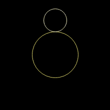
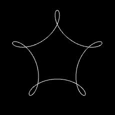

Create spirograph like graphics.
Morph your spirals by applying mutations.
Share your creations with friends on social media.
The dynamics by which a spiral are created are simple: a circle orbiting around a circle orbiting around a circle...
Think of Earth orbiting around the sun. The central circle (the sun) is always stationary. So with two circles things become boring very quickly as the only shape that you get is a circle. You can change the diameter of the circles which will change the size of the shape, but it will still be a circle. You can change the rotation direction or the number of the rotations of the second circle, but again it will still draw a circle.
With three circles it begins to get interesting. When you start the Spiral Fun app, it shows three circles. When you play this configuration, you will see this. To play the configuration press the play button.
To see or change the settings for each circle you can use the arrow buttons to navigate up and down the circle. The active circle will show a thick edge. The settings below are the settings for the active circle. There you can see and change the following:
To change the number of circles, you change the number in the "Circles:" box. To select a circle you can also tap the circle on the screen instead of using the arrows to navigate. This works fine for large circles, but very small circles may be hard to tap.
Let's make a small change. Navigate to the second circle (the middle one). The number of rotations is set at 5 at startup. Change it to 6. If you just played the previous configuration and you do not see the circles, but the drawn shape, then first press the "home" button to reset the scene.
When you play the changed configuration you will get this:
This is all there is to it! At first it may seem that the spirals you can create will be very limited in shape, but that is not true. Here is an example with seven circles:
You may think that you need many circles to create interesting spirals, but that is not true either. Here is an interesting spiral that was create with only three circles:
You can find more creations in the "Examples" menu.
Note that a GIF file can become large, i.e. more than 100MB. This depends on the complexity of your spiral image.
You define 1 or more mutations and set the length of the sequence, i.e. the number of images to create. For each mutation you set the following:
The circles are numbered starting at the center circle as 1. The next circle is 2, and so on.
Every next image is created by applying the next mutation from your list. If the list of mutations is exhausted then the first mutation is picked again.
If decrease of rotations result in 0 rotations for a circle then the next decrement will flip the rotation direction and the number of rotations will increase in the flipped direction. If decrease of a diameter result in a diameter of 1, then the diameter will not be decreased any further.
If you enable "Add reverse sequence" then the total sequence becomes twice as large. After the first sequence has been played, the mutations are applied in reverse such that the last image is your starting image.
You can just play the sequence on your screen or you can save it. In the latter case it will also be played on your screen, but at the same time it will be saved, just like recording a GIF of a single spiral.
It is recommended to save the pictures in a new album. This makes it easy to later delete the pictures as you can simply delete the whole album. The album will be named "SpiralFun" followed by a date/timestamp.
Below you can see a sequence of length 3. It starts with the default configuration. The rotations of the third circle are increased by 1 each time. This is the default mutation.
Note that for large sequences the GIF can become very large, i.e. more than 100MB. The size depends on the complexity of the spiral images.
Here is a sequence of 50 spirals, playing at a rate of 10 frames/sec.